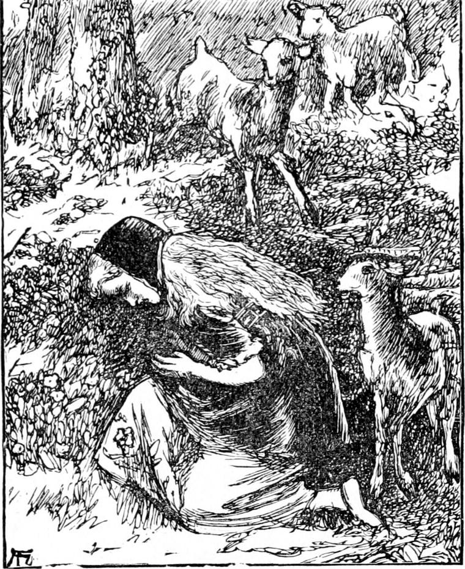

The spring so dear to all creatures, young and old, came at last, and before the first few days of it had gone, the king rode through its budding valleys to see his little daughter. He had been in a distant part of his dominions all the winter, for he was not in the habit of stopping in one great city, or of visiting only his favourite country houses, but he moved from place to place, that all his people might know him. Wherever he journeyed, he kept a constant look-out for the ablest and best men to put into office; and wherever he found himself mistaken, and those he had appointed incapable or unjust, he removed them at once. Hence you see it was his care of the people that kept him from seeing his princess so often as he would have liked. You may wonder why he did not take her about with him; but there were several reasons against his doing so, and I suspect her great-great-grandmother had had a principal hand in preventing it. Once more Irene heard the bugle-blast, and once more she was at the gate to meet her father as he rode up on his great white horse.
After they had been alone for a little while, she thought of what she had resolved to ask him.
'Please, king-papa,' she said, 'Will you tell me where I got this pretty ring? I can't remember.'
The king looked at it. A strange beautiful smile spread like sunshine over his face, and an answering smile, but at the same time a questioning one, spread like moonlight over Irene's. 'It was your queen-mamma's once,' he said.
'And why isn't it hers now?' asked Irene.
'She does not want it now,' said the king, looking grave.
'Why doesn't she want it now?'
'Because she's gone where all those rings are made.'
'And when shall I see her?' asked the princess.
'Not for some time yet,' answered the king, and the tears came into his eyes.
Irene did not remember her mother and did not know why her father looked so, and why the tears came in his eyes; but she put her arms round his neck and kissed him, and asked no more questions.
The king was much disturbed on hearing the report of the gentlemen-at-arms concerning the creatures they had seen; and I presume would have taken Irene with him that very day, but for what the presence of the ring on her finger assured him of. About an hour before he left, Irene saw him go up the old stair; and he did not come down again till they were just ready to start; and she thought with herself that he had been up to see the old lady. When he went away he left other six gentlemen behind him, that there might be six of them always on guard.
And now, in the lovely spring weather, Irene was out on the mountain the greater part of the day. In the warmer hollows there were lovely primroses, and not so many that she ever got tired of them. As often as she saw a new one opening an eye of light in the blind earth, she would clap her hands with gladness, and unlike some children I know, instead of pulling it, would touch it as tenderly as if it had been a new baby, and, having made its acquaintance, would leave it as happy as she found it. She treated the plants on which they grew like birds' nests; every fresh flower was like a new little bird to her. She would pay visits to all the flower-nests she knew, remembering each by itself. She would go down on her hands and knees beside one and say: 'Good morning! Are you all smelling very sweet this morning? Good-bye!' and then she would go to another nest, and say the same. It was a favourite amusement with her. There were many flowers up and down, and she loved them all, but the primroses were her favourites.

'They're not too shy, and they're not a bit forward,' she would say to Lootie.
There were goats too about, over the mountain, and when the little kids came she was as pleased with them as with the flowers. The goats belonged to the miners mostly-a few of them to Curdie's mother; but there were a good many wild ones that seemed to belong to nobody. These the goblins counted theirs, and it was upon them partly that they lived. They set snares and dug pits for them; and did not scruple to take what tame ones happened to be caught; but they did not try to steal them in any other manner, because they were afraid of the dogs the hill-people kept to watch them, for the knowing dogs always tried to bite their feet. But the goblins had a kind of sheep of their own—very queer creatures, which they drove out to feed at night, and the other goblin creatures were wise enough to keep good watch over them, for they knew they should have their bones by and by.